Cuts
- Women's cuts
- Men's cuts
- Children's cuts
Alum Rock Ave · San José · Established in 1988
Coloring, highlights, balayage and color correction, cuts for men, women and children, perms, curls and updos. A family-owned salon, operated under Angie.
Hablamos españolFalamos portuguêsEnglish
4.9 ★ 49 Google reviews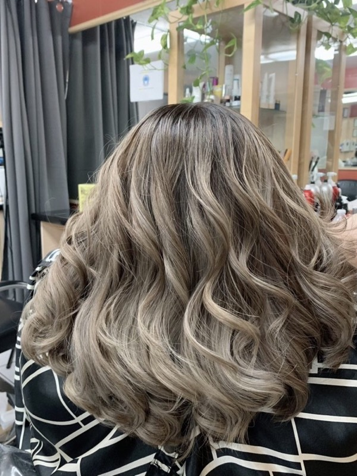
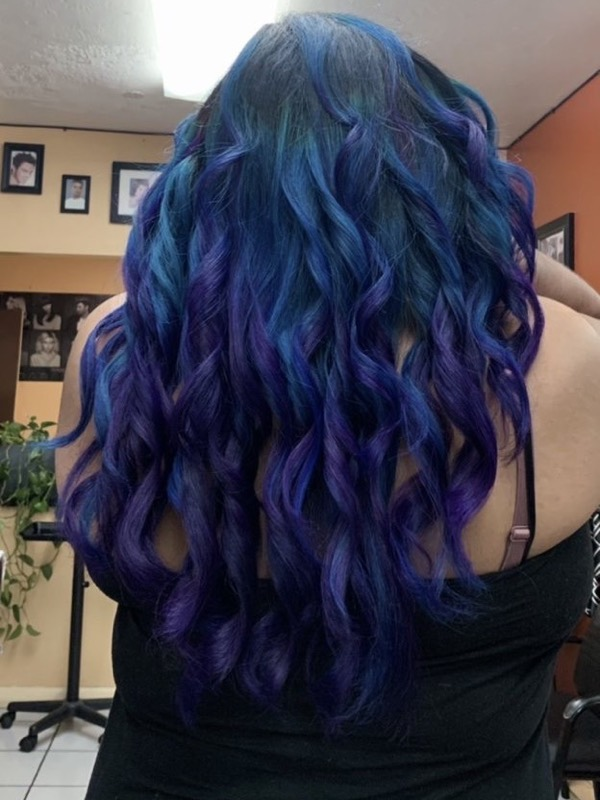
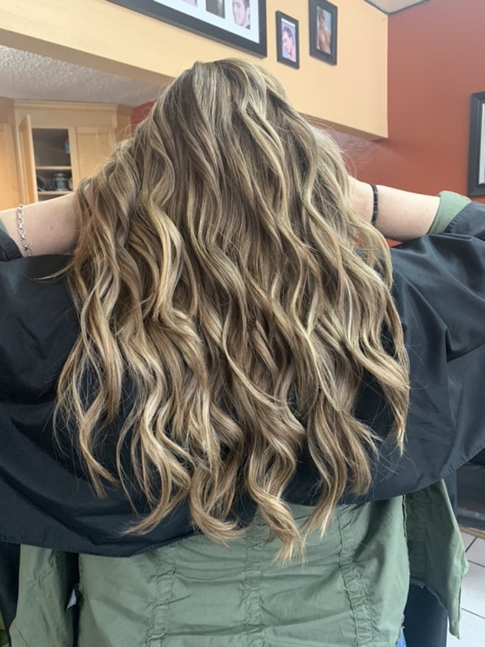
Color work
These are the salon's own photos of its own clients, with the salon's own captions. New work goes up on Instagram @kathys.beautysalon.
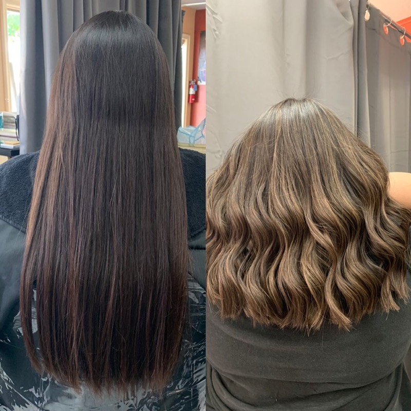
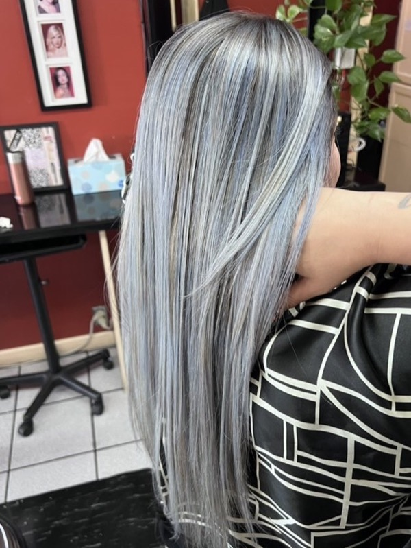
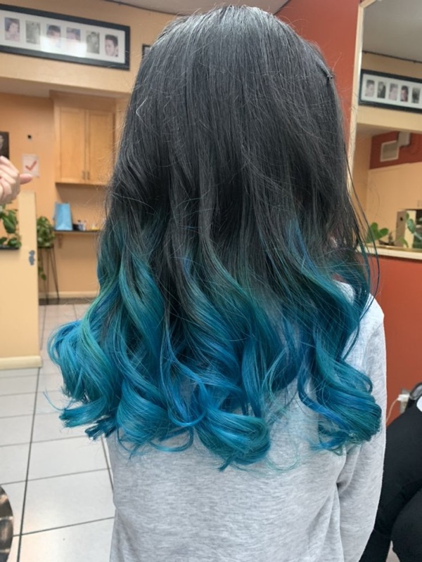
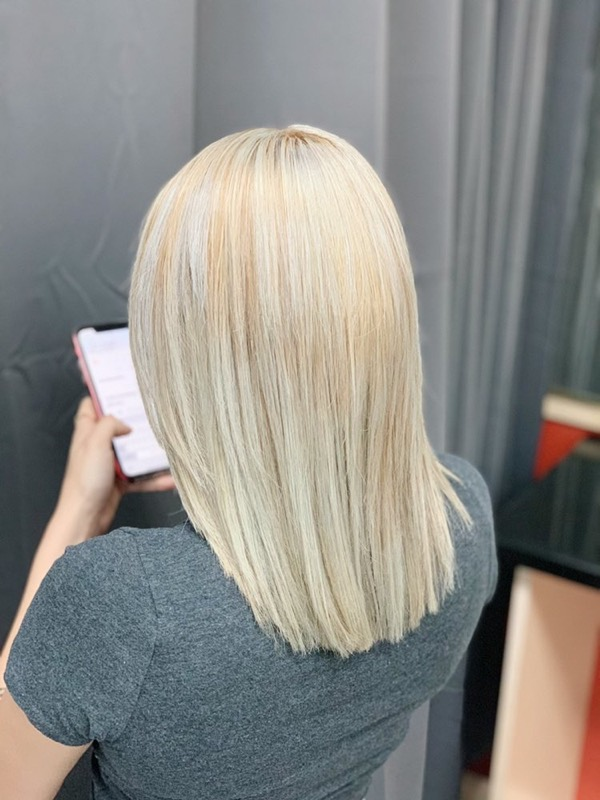
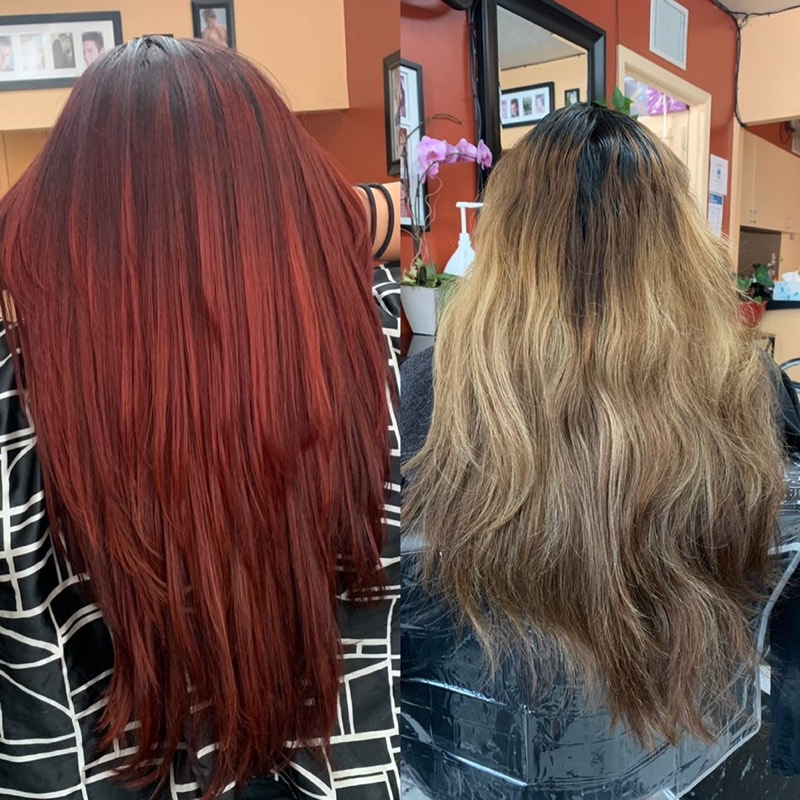
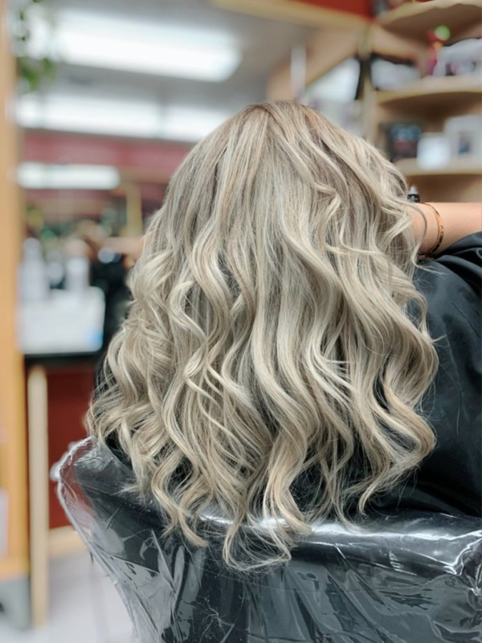
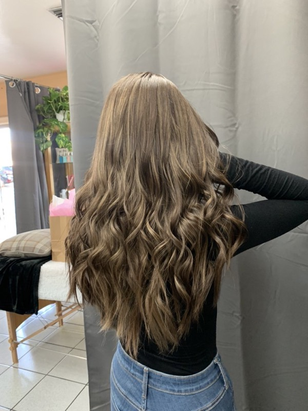
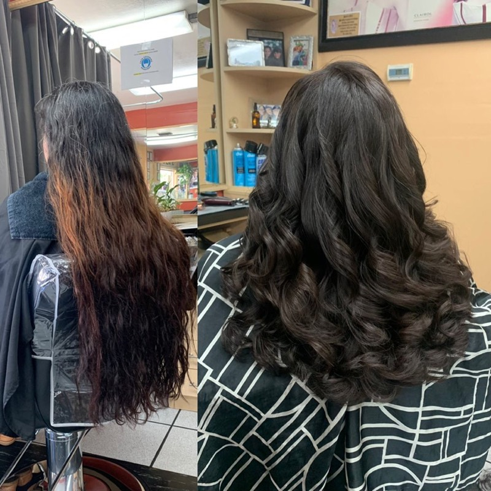
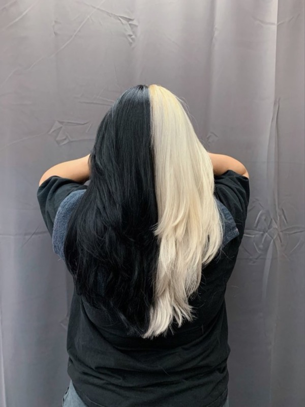
Hair services
Call for pricing and appointments. Walk-ins are welcome too.
About the salon
Family owned business operated under Angie. Experienced, passionate cosmetologist. A lot of something for everyone. Welcoming to all!
★★★★★
Angie is such a classy lady with amazing taste! I trusted her completely with the color choice and hairstyle, and she worked wonders on my hair. Even though it was late, she stayed, was incredibly patient, and delivered the best results I could have imagined. Her daughter was also so kind and patient, giving me beautiful curls. I highly recommend the salon!
★★★★★
I came to dye my hair for the first time, and left so happy! my hair looked so much healthier and I got highlights without having to bleach my hair thanks to the hairstylist Angie, she is amazing and I am so happy with my hair.
★★★★★
It was my fist time coming here and it definitely won't be the last! My hair is not the easiest to cut, I have very thick hair with wavy texture and other stylist have had a hard time giving me the results I want. You can definitely tell she has a lot of experience working with different lengths/textures. I was worried that a short haircut wouldn't work with my hair but I loved the results! I've been looking for a hairstylist in the area and I'm so happy I finally found someone I can trust with my hair.
★★★★★
Had a great time. Super personable and explained everything clearly. Walked my daughter through her anxiety in getting her hair lightened to get vivids done. Her hair came out wonderful.
I got my thigh length hair trimmed to about waist length with layers. Came out wonderful.
★★★★★
This was my first time at this salon. Angie was fantastic. I haven't had my hair cut in over a year- long overdue. I told Angie that I needed a low maintenance style (but wanted to keep some length). My hair is pretty thin also, which is always challenging. She asked me a few questions about my daily routine and gave me a cut that would be easy to manage but also looked really nice. She was easy to chat with and gave awesome food recommendations from nearby places. Would absolutely recommend, and will definitely be back!
★★★★★
I am forever grateful for everything that was provided during my visit. Not only does Angie have kindest heart and soul, she is extremely talented. I walked in with low confidence and no “animo”. I left with more confidence, fabulous hair, a big smile, and a beautiful memory. This woman is incredible. Thank you so so much for transforming my hair and my spirit.
Hours · Horario
Find us · Dirección
1577 Alum Rock Ave, Ste B
San Jose, CA 95116